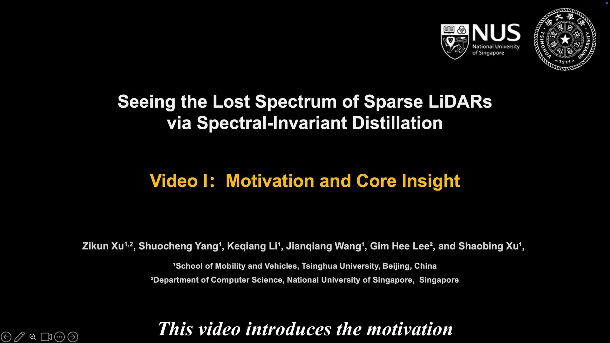
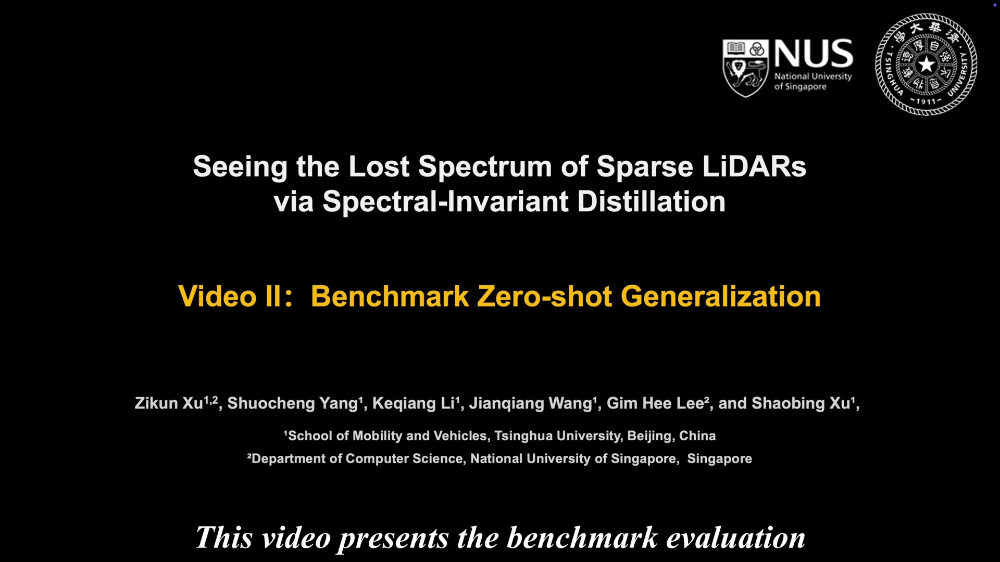
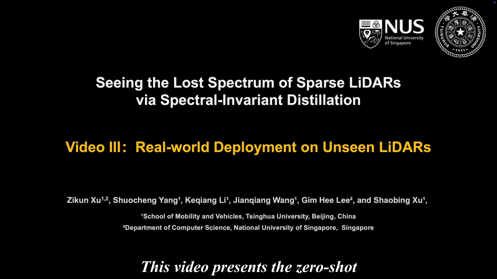
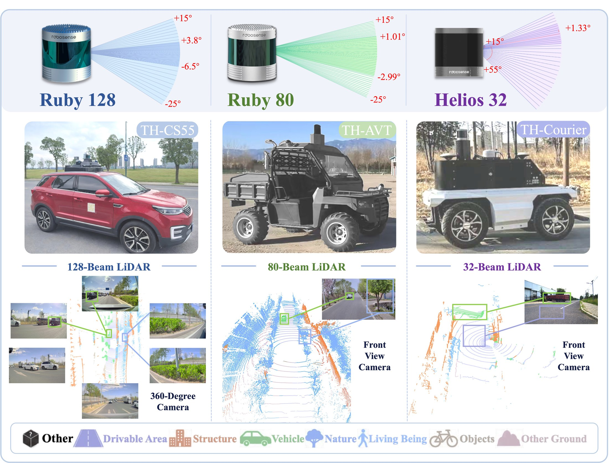

Part IMotivation and Core Insight: Different LiDARs Observe Different Spectra of the Same World

Why the sensor gap is a band problem.
Different LiDARs do not see different worlds; they see different spectra of the same world.
LiEqualizer equalizes a sparse-LiDAR student's spectrum against a dense teacher — during training only. The deployed network is unchanged.
1 · School of Vehicle and Mobility, Tsinghua University, Beijing, China
2 · Department of Computer Science, National University of Singapore
* Corresponding author
Main takeaway: read a LiDAR scan as a spectrum and the sensor gap becomes a band problem. A dense teacher still holds the bands a sparse scan lost, so a student can be taught to match them — restoring real detail in the encoder's code and suppressing invented detail in the decoder's logits. This buys up to +11.5 zero-shot cross-sensor mIoU with zero change to the architecture, the parameter count or the inference cost.
MotivationEngineers and researchers pay twice for LiDAR perception: a cheap sensor with few beams sees less of the scene, and every new sensor means new data, labels and training, team after team. Recent work cuts that cost by randomizing the sampling pattern during training, but ignoring a pattern does not return the measurements it never took, and putting them back has meant reconstructing the scan before the network reads it.
PerspectiveRead as frequencies, sparse sampling corrupts a scan in two coupled ways. High-frequency attenuation: genuine fine detail falls between the beams, and on the network's grid the isolated cells left behind read as high-frequency energy the scene never contained. Low-frequency aliasing: unresolved energy folds down into the low and middle bands and spreads a broadband floor across the spectrum. A filter can only do the first; a sampler does both, which is why the method has two branches. Because every sparse view misses bands, the attenuated magnitudes cannot be recovered from sparse data alone — but a teacher trained on densified scenes has observed exactly the bands the student misses.
MethodLiEqualizer equalizes the spectrum rather than rebuilding the scan. Both branches probe the representations through polynomial diffusion operators that commute with the Laplacian and create no new frequency components — spectral-invariant operators (SIOs) — so what is aligned is a step-wise diffusion response rather than a raw spatial signal. A low-frequency distiller on the encoder's tri-perspective planes restores the weakened macroscopic structure; a high-frequency distiller on the decoder's voxel logits suppresses the fabricated detail. Selective teacher gating is what avoids the negative transfer of indiscriminate dense-to-sparse mimicry.
ResultsAcross SemanticKITTI, nuScenes and Waymo, LiEqualizer improves all six unseen-sensor transfers by 0.9 to 11.5 mIoU (6.8 on average) and raises source-domain mIoU by 7.4 to 17.0 points, enough for a single generalizable model to surpass the in-domain experts trained on real scans on all three benchmarks. No architectural change, no added parameters and no extra data; the only overhead is the one-time cost of training the teacher. The losses act in training alone, so the deployed model keeps the baseline's architecture and inference cost. On three vehicles carrying previously unseen 32-, 80- and 128-beam LiDARs, the unchanged model improves class-averaged IoU over the randomized-sampling baseline in all nine platform–source settings.
On raw point clouds, sparse sampling attenuates real high frequencies: the detail falls between the beams. On the voxel grid the network actually reads, the isolated cells left behind fabricate high-frequency energy the scene never held, while unresolved energy folds down into the low and middle bands as a broadband floor. A filter can only attenuate. A sampler does both, which is why the method has two branches.
Both branches read responses of the same diffusion family, and both are gated by the frozen teacher: the gate decides where to match and where to suppress. The two branches differ in where in the network they act, which is what fixes their band.
In the encoder's compressed code, the student's smoothed response is matched to the teacher's where the teacher's gate is open, and driven toward zero where it is closed. That returns structure the student's beams never measured.
In the decoder's voxel logits, the student's high-pass response is matched to the teacher's where the teacher has detail, and suppressed toward the teacher's own level where it does not — so aliasing cannot pass as real detail.
Three films: the insight behind the method, the benchmark evaluation, and the on-vehicle deployment. All of them show the same zero-shot model, trained on one public dataset and run on sensors that appear in none of them, with no target-domain data and no fine-tuning.

Why the sensor gap is a band problem.

Nine source-to-unseen transfers, against both baselines.

Scored against 900 independently labelled frames.
Every number below is the same backbone, the same schedule and the same generated data as the randomized-sampling baseline. Only the training objective differs.
The deployed network is identical to the baseline's, so on-vehicle testing needs no re-integration. Three platforms carry previously unseen 32-, 80- and 128-beam LiDARs, with mounting heights absent from every training set. A third-party service labelled 900 frames from scratch, with no model output shown to the annotators, and against those labels LiEqualizer improves class-averaged IoU in all nine platform–source settings, by 5.4 to 9.8 points — the gains concentrating on the categories sparse sampling degrades most: vehicles, living beings and ground surfaces.
128-beam Ruby, never seen in training. 600 of its frames carry independent labels.
80-beam Ruby. Same weights, different beam pattern, no re-tuning.
32-beam Helios on a low-speed delivery platform — the sparsest scan of the three.

Twelve fifteen-second clips from each of the three platforms, thirty-six in all. Each shows the camera, LiEqualizer's segmentation of the sparse scan, and the drivable area and local plan read from that segmentation. The weights are the zero-shot ones throughout: trained on a single public dataset, deployed on a sensor that appears in none of them, with no fine-tuning and no re-integration.
A full-size passenger platform on dense urban roads, six cameras in the left panel.
A mid-size shuttle on tree-lined campus roads, where a sparse scan loses most fine upright structure.
A low-speed delivery platform carrying the sparsest scan of the three.
The two diagnostic figures from the manuscript, re-drawn here from the released measurements rather than pasted in as pictures. Both read band by band, from the lowest-frequency band on the left.
Read downwards from the undistilled student; each row adds one module. Brackets are the difference from the first row.
Re-implemented under one pipeline with the same teacher, the same student, the same signals and the same schedule, so that only the objective differs.
The spectral measurement protocol is released with the code so the diagnosis can be reproduced on any sensor pair.
@article{xu2026liequalizer,
title = {LiEqualizer: Seeing the Lost Spectrum of Sparse LiDARs via Spectral-Invariant Distillation},
author = {Xu, Zikun and Yang, Shuocheng and Wang, Jianqiang and Li, Keqiang
and Lee, Gim Hee and Xu, Shaobing},
year = {2026},
note = {Preprint}
}
The diagnosis is a separate contribution: a measurement protocol that reports what sparse sampling does to a signal, and whether distillation repaired it. Every figure below is rendered live from the released measurements.